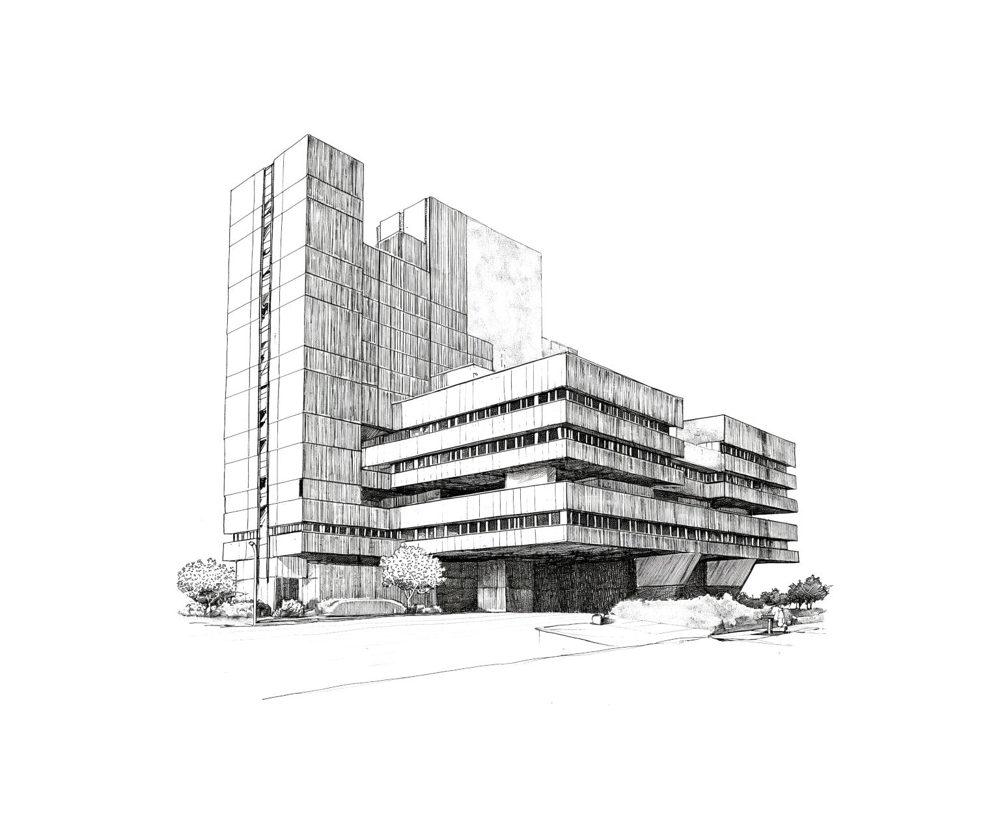

Introduktion
Välkommen till Panoptikon. I denna handbok hittar du alla regler som behövs för att navigera i spelets värld. Regelverket kan initialt kännas omfattande, men ingen anledning till oro. Vi har designat boken för att guida dig genom spelets olika aspekter på ett tydligt och stegvis sätt. Tveka inte att använda boken som en resurs under spelets gång för att snabbt slå upp regler eller klargöra detaljer. Med tiden kommer du att finna att spelupplevelsen blir mer flytande och intuitiv. Lycka till i din resa genom företagets korridorer och möten.

Vad är Panoptikon?
Panoptikon är en mystisk och multifacetterad organisation som du nu är en del av. Dess exakta verksamhet är inte tydligt definierad och omges av en aura av hemlighetsfullhet. Det är en plats där traditionella affärsstrategier blandas med okända mål och metoder. Som anställd kommer du att utforska dess komplexa och ibland oförutsägbara värld, där dina handlingar och beslut bidrar till dess fortgående berättelse och utveckling.
Vad är rollspel?
I detta spel är målet att gemensamt hantera både förväntade och oväntade situationer i det dagliga arbetet. Spelet fokuserar på samarbete, där spelarna tillsammans arbetar för att lösa utmaningar och problem. Det är inte en tävling mot varandra, utan en kamp mot omvärlden, med målet att främja lärande och förståelse för alla. Genom att navigera i spelets komplexa scenarier, stärker ni era färdigheter i problemlösning och strategiskt tänkande, samtidigt som ni upplever spänningen i att lösa problem innan de uppstår i verkligheten.
Spelare
Som spelare skapar och styr du en karaktär i spelets värld. Du beskriver dina karaktärers handlingar och reaktioner på de situationer som spelledaren presenterar. Användning av tärningar är ofta central för att bestämma utfallen av dina handlingar, speciellt i utmanande situationer. Genom att utveckla din karaktärs personlighet och bakgrund bidrar du aktivt till spelets berättelse. I samarbete med andra spelare utforskar du världen och tar dig an diverse utmaningar.
Spelledare
Som spelledare leder och formar du spelets berättelse och värld. Du beskriver miljöer, skapar scenarion och agerar som alla icke-spelarkaraktärer. Din roll innebär att upprätthålla spelvärldens regler och logik, samt att avgöra konsekvenserna av spelarnas handlingar. Som domare över regler och tärningsslag krävs det att du är flexibel och kan improvisera. Ditt huvudmål är att skapa en engagerande och underhållande upplevelse för alla deltagare.
Spela en session
I spelsession försöker spelet efterlikna en TV-serieepisod eller miniserie, med händelser som utspelar sig över en eller flera dagar. En session varar normalt mellan två till sex timmar. Under sessionen står du och dina medspelare inför ett huvudproblem som kräver omedelbar uppmärksamhet, samt sekundära mål och situationer.
Inte allt kan hanteras på en gång, och med tärningarnas slump, din egen skicklighet och karaktärens förmågor, arbetar ni för att uppnå era mål. Resultaten av era handlingar får konsekvenser, och även om ni pausar för vila, måste målen uppnås för att undvika reprimander.
Respektera gränser
I rollspel är det viktigt att respektera varandras gränser för att skapa en trygg och inkluderande upplevelse. Här är några tips:
- Kommunikation är nyckeln: Före spelet, diskutera vad som är okej och inte okej för varje spelare. Detta kan inkludera teman som våld, språkbruk eller personliga gränser.
- Aktiv lyssnande: Var uppmärksam på dina medspelares reaktioner. Om någon verkar obekväm, pausa och diskutera hur ni kan fortsätta på ett sätt som alla är bekväma med.
- Flexibilitet i berättandet: Var redo att ändra spelriktning om det blir nödvändigt för att respektera spelares gränser.
- Efter-spelet feedback: Efter spelet, ha en öppen diskussion där spelare kan uttrycka sina tankar och känslor om spelupplevelsen.
Kom ihåg, målet är att alla ska känna sig säkra och ha roligt!
Komma igång
- Bestäm vem som ska vara SL.
- Övriga spelare skapar sina rollpersoner.
Förkortningar
...
Tid
...